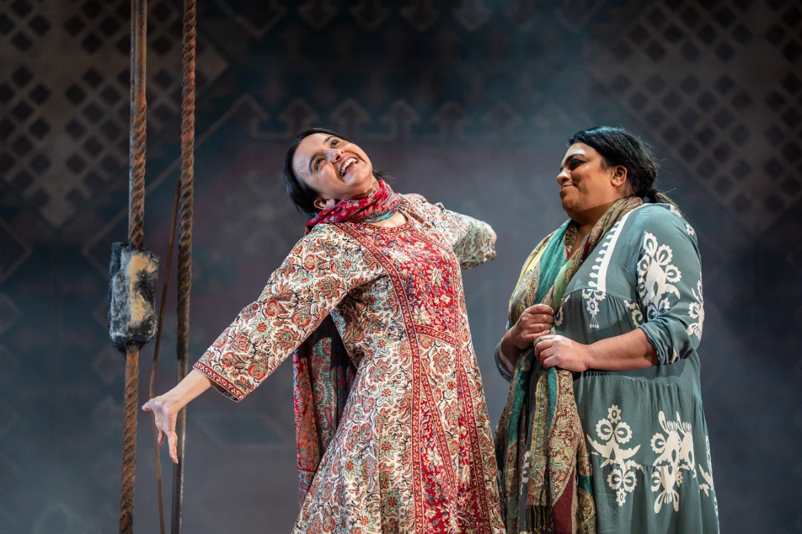

Following a sell-out run in 2025, Birmingham Rep is pleased to announce that its acclaimed production of A Thousand Splendid Suns will embark on a national tour in Spring 2027, beginning at Birmingham Rep from 29 January.
Based on the international best-selling novel by Khaled Hosseini—which has sold over 38 million copies—and adapted for the stage by Ursula Rani Sarma, A Thousand Splendid Suns is directed by Kimberley Sykes. The powerful production features Rina Fatania making a welcome return to reprise her role as Mariam, with Set and Costume Design by Simon Kenny. Set in a war-torn 1992 Afghanistan, the play tells the unflinching story of survival, resilience, and the strength of the human spirit as two women, Laila and Mariam, become unlikely allies amidst starvation, brutality, and fear.
Ages 14+ Mature Themes
Kimberley Sykes shared: “It’s an honour to be asked to direct this courageous and vital piece of storytelling. Ursula’s adaptation of Khaled Hosseini’s seismic novel burns with defiance and soothes with humanity. Now, five years into the Taliban’s current rule and women’s rights in Afghanistan at crisis point, this play seems more urgent than ever.”
Joe Murphy, Artistic Director at Birmingham Rep, added: “A Thousand Splendid Suns played to packed houses here in Birmingham in 2025, and I’m thrilled and proud that The Rep is taking this deeply affecting piece of theatre on the road as part of a national tour in 2027.”
Photo credit: A Thousand Splendid Suns. Production Images from 2025 production. Photos by Ellie Kurttz
Photo Gallery
- Birmingham Rep (29 January-13 February)
- Chichester Festival Theatre (16-20 February)
- Liverpool Playhouse (23-27 February)
- Bath Theatre Royal (2-6 March)
- Theatr Clwyd (8-13 March)
- Cambridge Arts Theatre (15-20 March)
- Richmond Theatre (22-27 March)
- Nottingham Playhouse (5-10 April)
- Leeds Playhouse (13-17 April)
- Oxford Playhouse (19-24 April)
- Darlington Hippodrome (4-8 May)
- Poole Lighthouse (11-15 May)
- Guildford Yvonne Arnaud Theatre (25-29 May)